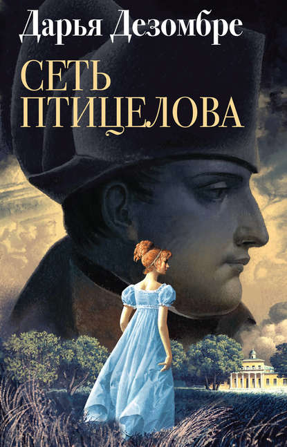
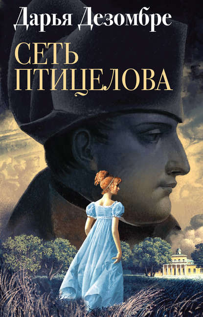
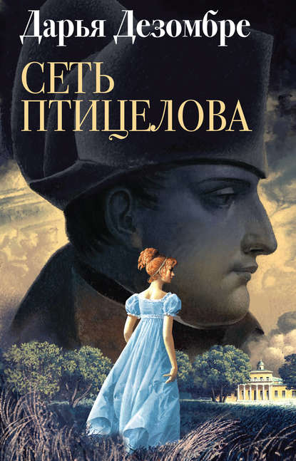
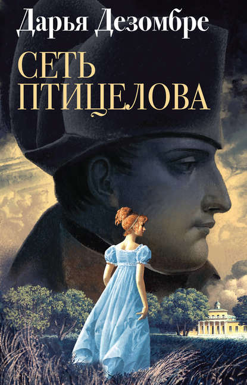

Июнь 1812 года. Наполеон переходит Неман, Багратион в спешке отступает. Дивизион неприятельской армии останавливается на постой в имении князей Липецких – Приволье. Вынужденные делить кров с французскими майором и военным хирургом, Липецкие хранят напряженное перемирие. Однако вскоре в Приволье происходит страшное, и Буонапарте тут явно ни при чем. Неизвестный душегуб крадет крепостных девочек, которых спустя время находят задушенными. Идет война, и официальное расследование невозможно, тем не менее юная княжна Липецкая и майор французской армии решают, что понятия христианской морали выше конфликта европейских государей, и начинают собственное расследование. Но как отыскать во взбаламученном наполеоновским нашествием уезде след детоубийцы? Можно ли довериться врагу? Стоит ли – соседу? И что делать, когда в стены родного дома вползает ужас, превращая самых близких в страшных чужаков?..
Серия: Дезомбре Дарья: Интеллектуальный детектив
Издательство: Эксмо
ISBN: 978-5-04-100271-8
Год издания: 2019
Язык: Русский
Твердый переплет, 384 стр.
Жанры: Отечественные детективы